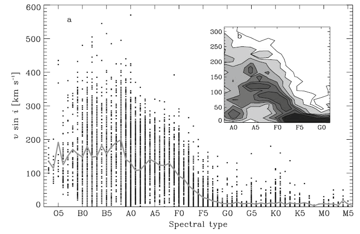
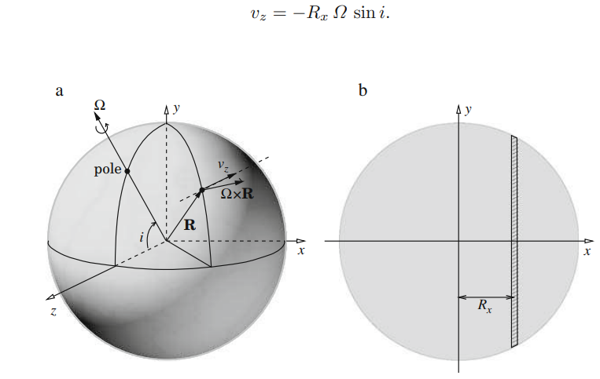
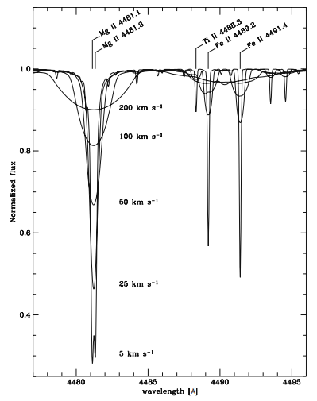
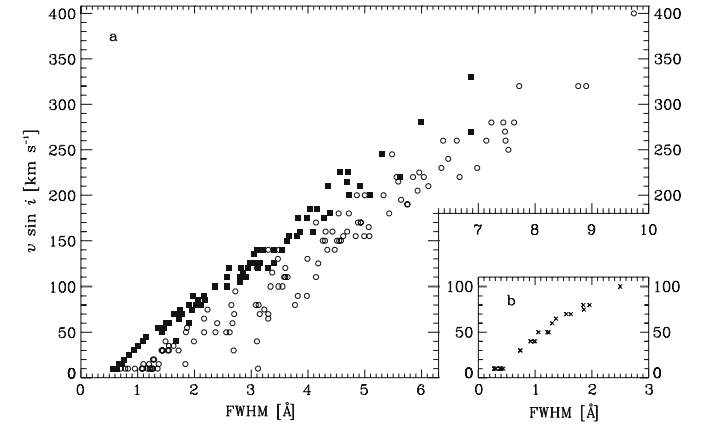
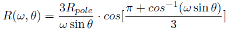
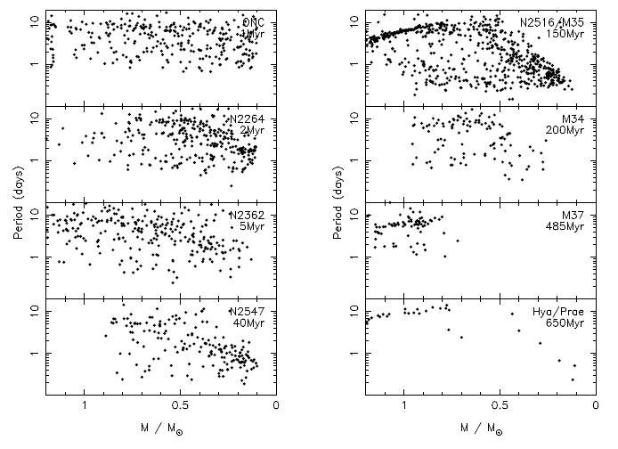

Rotación estelar y técnicas para su determinación
Astronomía estelar, 2021.
Alumno: Nicolás Linares
Introducción
Un poco de historia
El estudio de la rotación estelar comienza en el siglo XVII, con las primeras observaciones de las manchas solares. El astrónomo Johannes Fabricuis (1587 – 1617) fue el primero en publicar sus observaciones del movimiento de estas manchas, argumentando que dicho movimiento tenía lugar debido a que las manchas se situaban en la superficie de un Sol en rotación. Posteriormente Galileo Galilei, Thomas Harriot, Christopher Sheiner, entre otros, estudiaron el movimiento de las manchas solares, pero recién en el año 1850 se logró un avance significativo en el tema, cuando Richard Carrington y Gustav Spörer determinaron que el Sol no rotaba como un cuerpo rígido, sino que el periodo de rotación variaba como una función de la latitud heliocéntrica. La aparición del espectroscopio proporcionó nuevas maneras de determinar la rotación solar.
Importancia física
La rotación estelar tiene su aparición en el origen mismo de las estrellas. Estas se forman de nubes de gas y polvo que colapsan gravitacionalmente, moviéndose de manera turbulenta y provocando un momento angular que se conserva.
Es importante comprender el origen y evolución del momento angular de una estrella, ya que éste tiene impacto en distintos procesos tales como la actividad magnética, flujos de masa, abundancias químicas en la superficie, flujos internos, etc. La rotación es uno de los parámetros fundamentales en una estrella y afecta tanto la formación, la evolución y la muerte de la misma. Se ha observado que la velocidad de rotación depende estrechamente del tipo espectral.
La rotación estelar afecta además la evolución de una estrella. Ésta altera, por ejemplo, la distribución de elementos, permitiendo que elementos pesados se sitúen en la superficie provocando una modificación en las abundancias observadas, pero también que el hidrógeno en capas externas “caiga” a capas más internas, abasteciendo de combustible al núcleo y por lo tanto modificando el tiempo en secuencia principal.
También el fenómeno de rotación está relacionado con los eventos supernova. Ésta influye críticamente en la masa de los núcleos que explotan, en la masa y la composición química de las envolturas y los tipos de supernovas, así como las propiedades de los remanentes y los rendimientos químicos. En la formación de estallidos de rayos gamma la rotación y las propiedades de las estrellas en rotación aparecen como el factor clave.

Fig 1. Relación entre velocidad de rotación y tipo espectral. (F. Royer)
Técnicas de medición
- Espectroscopía:
Modelando la estrella como un cuerpo rígido, que rota con velocidad angular Ω, y suponiendo que la línea de la visual esté en dirección del eje z como lo muestra la figura 2, la velocidad en cualquier punto de la superficie estará dada por
El corrimiento Doppler se debe a la componente de esta velocidad a lo largo de la linea de la visual, y el ensanchamiento total resultante será la integración de esta componente sobre todo el disco aparente.

Fig 2. (Izquierda) Relación vectorial para la componente de la velocidad de rotación a lo largo de la visual.
(Derecha) Contribución de una banda particular al corrimiento Doppler.
De este modo, cuando se miden rotaciones a través del ensanchamiento de líneas espectrales, lo que se determina es vsin(i)=RΩsin(i). A pesar de que en la mayoría de los casos no se conoce el ángulo de inclinación del eje de rotación, se pueden hacer consideraciones estadísticas para estimarlo. El valor más alto de vsin(i) registrado es el de una estrella de tipo O en la Nube Mayor de Magallanes, siendo de aproximadamente 600 km/s.
Las velocidades de rotación proyectadas pueden ser determinadas mediante diferentes técnicas:
El ancho completo a la mitad del máximo (FWHM) de las líneas espectrales se usa a menudo como una medida de los mecanismos de ensanchamiento. En la figura 3 se muestra un ejemplo. Las líneas se hacen más anchas y menos profundas al aumentar vsin(i). También se puede ver el efecto de las combinaciones de líneas vecinas que hace que las líneas que están alrededor de 4490 Å imposible de medir individualmente. Utilizando estrellas estándares con distintos tipos espectrales se puede realizar una calibración de vsin(i) contra FWHM (figura 4).

Fig 3. Espectro sintético para T=10000°K, log(g)=4.0dex.

Fig 4. FWHM derivado de las líneas HeI 4471 (estrellas O9-B7) y Mg 4481 (B8-F0). FWHM derivado de la línea FeI 4476 (F0-F8).
Otra técnica es la de la correlación cruzada, en la cual se correlaciona el espectro a medir con uno “patrón” de baja rotación. Este método es utilizado principalmente en estrellas frías.
La síntesis espectral consiste en el cálculo de un rango espectral completo que incluye todas las líneas observadas. Requiere de atmósferas modelo y parámetros atmosféricos para interpolarlos en una estrella dada. Permite el ajuste de parámetros como abundancias de elementos, ensanchamiento y corrimiento Doppler, hasta lograr el mejor ajuste del espectro observado.
Por último, se puede calcular la transformada de Fourier del perfil de línea, y ésta se relaciona directamente con la velocidad de rotación.
- Interferometría:
Para estrellas relativamente cercanas, es posible resolver el disco estelar mediante interferometría. Puede ser determinada la razón entre el radio ecuatorial y el radio polar, lo que da una idea de cuánto se “deforma” el disco. Esta cantidad puede llegar a ser significativa para estrellas que roten rápidamente.
Existe una relación funcional entre el radio y la latitud de rotadores rápidos dada por Roche

donde w es la razón entre la velocidad angular de la estrella y la velocidad angular crítica en la cual la gravedad y las fuerzas centrifugas están equilibradas. Utilizando esta expresión para el radio ecuatorial, podemos hacer uso de la interferometría para hallar la velocidad de rotación de la estrella.
La interferometría puede ser combinada con la espectroscopía en una única técnica llamada espectro-interferometría para medir el ángulo del eje de rotación de una estrella cuya superficie no está completamente resuelta en el espacio.
El método consiste en medir la posición del fotocentro de la estrella a través de una línea espectral. Cada canal de velocidad dentro del perfil de línea corresponde a una franja de rotación en la superficie estelar, paralelo al eje de rotación. Por ejemplo, el ala más al rojo del perfil de línea coincide espacialmente con la rama del hemisferio en retroceso. Como el fotocentro es registrado a través de la línea en sucesivos canales de velocidad, su ubicación se mueve ligeramente en el plano del cielo en una dirección perpendicular al eje de rotación. Usando varias líneas de base interferométricas con diferentes orientaciones, la dirección de la proyección del eje de rotación puede ser derivada.
- Fotometría:
Es el método más antiguo para determinar la rotación y consiste en monitorear las manchas en la superficie de la estrella. Aun cuando la superficie estelar no puede ser resuelta, estas manchas producen una modulación en el brillo de una manera periódica. De este modo, con la determinación de la curva de luz fotométrica y la detección de una modulación periódica de la luminosidad, se establece un método directo para obtener el período de rotación.
Con los satélites Corot y Kepler se obtuvieron curvas de luz con gran precisión, lo que permitió utilizar esta técnica para determinar periodos rotacionales extremadamente precisos de una enorme cantidad de estrellas. Actualmente, se utiliza la misión TESS. Éste telescopio fue diseñado para llevar a cabo la primera prospección de exoplanetas en tránsito por todo el espacio desde un vehículo espacial. Está equipado con cuatro telescopios de gran angular y detectores de dispositivos de carga acoplada (CCD) asociados.
Es claro que la aplicación de esta técnica es utilizada para estrellas magnéticamente activas que presenten manchas en su superficie, que es el caso de las estrellas del tipo solar, y de baja masa de tipos espectrales F tardías a M, incluso enanas marrones.
- Astrosismología:
La astrosismología se centra en estudiar las vibraciones que se producen en las estrellas para conocer propiedades de su estructura y dinámica interna. La base de esta técnica es el estudio de las ondas sísmicas que se producen en el interior por el movimiento de los gases, provocando oscilaciones en la superficie estelar. Como las estrellas no son cuerpos rígidos, la velocidad angular en el ecuador suele ser diferente que la velocidad angular en otras latitudes. En el caso del sol, esta rotación diferencial está directamente asociada al mecanismo de transporte de energía en su interior, y así, mediante la astrosismología es posible determinar la velocidad de rotación mediante el estudio de esta dinámica interna.
Esta técnica tuvo un gran desarrollo gracias a las misiones COROT y Kepler. Éste último permitió la obtención de alrededor de 500 espectros de vibración de estrellas tipo solar con una excelente calidad para su análisis sismológico.
Rotación en pre secuencia principal y secuencia principal
En la década de los 90’s comenzó un gran trabajo de monitoreo fotométrico que permitió la obtención de distribuciones completas de períodos rotacionales para miles de estrellas de baja masa en presecuencia principal y secuencia principal. En la figura 5 vemos cómo evolucionan estas distribuciones en distintos cúmulos. Se observa una tendencia de evolución hacia períodos de rotación más cortos para las estrellas de menor masa mientras se avanza hacia la ZAMS, llegando a valores menores a 1 día. Para el caso de estrellas más masivas, no observamos una tendencia a evolucionar en rotadores veloces.

Fig 5. Compilación de períodos de rotación de estrellas de masa menores a 1.2 masas solares en cúmulos de entre 1 Myr y 0.6 Gyr (J. Bouvier - Observational Studies of Stellar Rotation ).
En líneas generales, estrellas del tipo solar y de baja masa (0.5-1 masas solares), tienen una gran dispersión inicial de periodos de rotación que se borra al llegar a la secuencia principal. La convergencia rotacional de las estrellas de tipo solar ha permitido la medición de la edad estelar a través de su velocidad de rotación.
Para estrellas de muy baja masa (<0.3 masas solares), parece haber una convergencia hacia períodos cortos de rotación en ZAMS, pero vuelve a haber dispersión en la distribución de periodos ya entradas en secuencia principal.
La evolución de la rotación en estrellas de baja masa se cree que está determinada por 3 procesos físicos: la interacción con el disco estelar en la presecuencia principal temprana, el frenado por vientos magnetizados, y el transporte de momento angular en el interior estelar.
Es interesante comentar el fenómeno conocido como “disk-locking paradigm”, por el cual se ralentiza la aceleración natural durante el colapso gravitatorio en la formación estelar. Ya mencionamos que en el origen de las estrellas una nube de gas y polvo, rota y colapsa gravitatoriamente conservándose el momento angular. Esta conservación genera un disco de acreción de materia en cuyo centro se forma la protoestrella. A medida que el colapso continúe, la velocidad de rotación podría superar cierto límite en el cual se destruya la protoestrella debido al aumento de las fuerzas centrífugas. Por lo tanto para que esto no ocurra, debe haber una ralentización en la velocidad de rotación en los primeros 150.000 años. Existen diferentes teorías para explicar este frenado, siendo las primeras originalmente propuestas por Camenzind en 1990, Königl en 1991 y Shu en 1994. Si bien todas difieren en ciertos detalles específicos sobre cómo se da la extracción de momento angular del sistema, hay un acuerdo general en que lo que provoca dicha extracción es una interacción magnética entre la protoestrella y el disco de acreción.
Conclusiones
En este trabajo se ha intentado dar un panorama general de las distintas técnicas para la determinación de la rotación estelar, los comienzos de las mismas y el avance conseguido hasta la actualidad. Vimos las relaciones existentes entre la rotación y diferentes aspectos de las estrellas, como el tipo espectral, la masa e incluso la evolución de las mismas. Por lo tanto es más que claro, que la rotación estelar es un parámetro fundamental a tener en cuenta, que aporta información y puede ayudar incluso a determinar la edad de una estrella.
Referencias
- F. Royer - On the Rotation of A-Type Stars.
- J. Bouvier - Observational Studies of Stellar Rotation.
- J.L Tassoul - Stellar Rotation.
- Roberto Gamen - Notas de teoría, Astronomía Estelar.
- Fallscheer, Herbst – Testing the Disk-Locking Paradigm.